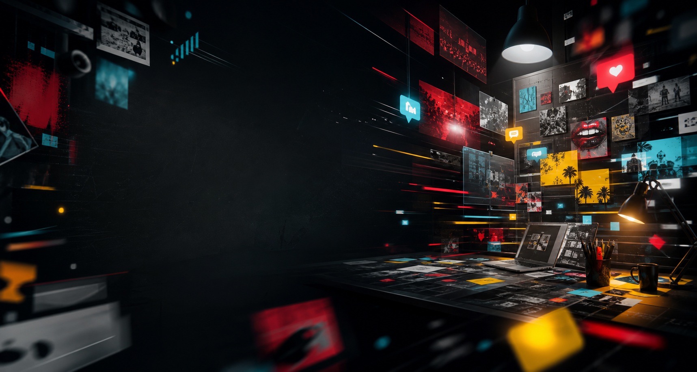

Oportunidade nasce no timing

Hub criativo / memes / cultura pop / publicidade
Tendência vira ideia. Ideia vira oportunidade.
Peu lê a internet em tempo real e transforma repertório, timing e sensibilidade criativa em campanhas, produtos, comunidades e conversas de massa.
criatividade
estratégia
tendências
novos negócios
Trend com estratégia e entrega
Ideia boa já nasce compartilhável
Globo
iFood
Spotify
Prime Video
Disney
Coca-Cola
Ambev
McDonald's
Mercado Livre
Burger King
Serasa
Claro
TIM
Itaú
Magazine Luiza
Ivete Sangalo
BYD
Quem é Peu?
Publicitário, criador de conteúdo e influenciador com feeling raro para transformar internet em mercado.
Publicitário, criador de conteúdo e influenciador, ele atua há 11 anos na internet combinando criatividade, estratégia, planejamento, inovação, tendências, networking e novos negócios.
Hub criativo
As tendências mandam sinais. Peu traduz em oportunidade.
O hub conecta tendências, conteúdo, posicionamento e sensibilidade criativa para transformar cultura digital em ideias vendáveis, conversas públicas e produtos com circulação.
Arquitetura criativa
Sistema de criação para organizar conceito, narrativa, formato e entrega.
Análise de tendências
Monitoramento em tempo real das conversas, comunidades e sinais culturais.
Novos negócios
Ideias, lançamentos, monetização e inovação para marcas, empresas e influenciadores.
Mapa cultural
Escolha um território e veja como uma leitura vira entrega.
Um recorte dos territórios em que Peu conecta timing, comunidade, marca e produto com linguagem de internet.
Leitura de timing, linguagem de plataforma e gatilhos de compartilhamento.
Mesa de ideias
Escolha um território e veja a ideia ganhar forma.
Um quadro de raciocínio criativo: contexto, virada, formato, entrega e prova de valor.
Cobertura em tempo real
Transformar acontecimentos de reality show em narrativa social com timing, humor e leitura de torcida.
- Monitorar conversa
- Achar a virada emocional
- Publicar antes da curva cair
Da reclamação ao negócio
A internet virou palco, produto e carreira.
Uma trajetória que começa no humor universitário, passa por televisão, grandes perfis e marcas nacionais, e vira uma assinatura criativa focada em cultura pop.
Deprê Universitária
Aos 17 anos, a frustração com o curso de Direito virou conteúdo. O perfil explodiu no Facebook e chegou a 400 mil seguidores em três meses.
Teleton e virada de chave
O convite para a bancada de influenciadores no SBT marcou a decisão de deixar Direito para seguir a criatividade digital.
Alfinetei e grandes audiências
Em cinco anos, ajudou a levar o perfil de 7/11 milhões para 23 milhões de seguidores, consolidando experiência em alcance e monetização.
Marcas, produtos e Banco de Mentes
Hoje lidera um ecossistema criativo com consultoria, assinatura de produtos e experiências para marcas e personalidades.
Arquivo de cases
Projetos, coberturas e movimentos que viraram conversa.
case de crescimento
Alfinetei
Crescimento, narrativa, legenda, leitura de pauta e monetização em um dos maiores perfis de cultura pop do país.
- Resultado citado
- 7/11M → 23M seguidores
- Território
- celebridades, realities e internet
gestão de audiência
Sou Eu na Vida
Atuação como editor-chefe e criativo em perfil com 17 milhões de seguidores.
head de criação
Banca Digital
Head de criação e atendimento, com atuação conectando marcas, influenciadores e cultura digital.
reality e torcida
BBB
Leitura de torcida, timing de publicação e narrativas sociais capazes de influenciar conversa em massa.
ativação de marca
Carnaval da BYD
Visão criativa aplicada em ações de marca, eventos, presença social e cultura pop.
eventos e cultura pop
Sapucaí, Farofa da Gkay e BBB
Coberturas e narrativas orientadas por tempo real, repercussão e conversas de massa.
direção criativa
Mynd & Billboard
Experiência como diretor de criação e líder de tendências no mercado digital e de entretenimento.
Presença cultural
Eventos, palcos e marcas onde o repertório encontrou audiência.
Eventos e cultura pop
Farofa da Gkay, Sapucaí, Rock in Rio, São João da Thay, Tomorrowland, Numanice e Ensaios da Anitta.
Redes sociais como carreira
Participações em Unimontes, UpFront Mynd e Teleton falando sobre memes, mercado e influência digital.
Memes dentro da publicidade
Trabalhos e inserções com Mercado Livre, iFood, Globo, McDonald's, Burger King, Disney, Spotify, Itaú, Ambev e Coca-Cola.
Territórios de atuação
Caminhos de atuação para marcas, artistas e produtos.
Estratégia criativa
Conceitos, campanhas, posicionamento e ideias com potencial de conversa pública.
Conteúdo viral
Leitura de tendências, timing, linguagem de plataforma e formatos compartilháveis.
Gestão de audiência
Operação de perfis grandes, calendário, editoria, engajamento e crescimento.
Produtos e consultoria
Banco de Mentes, mentorias, direcionamento criativo e transferência de repertório para marcas.
"Meu diferencial é criatividade estratégica, cultura digital, raciocínio rápido e habilidade de identificar tendências em tempo real."
Peu, em entrevista ao portal LeoDias
Agora é com Peu
Vamos produzir conteúdo relevante juntos?
Para convites, campanhas, palestras, coberturas e projetos criativos, estes são os caminhos diretos para chegar no universo dele.